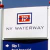
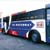
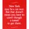
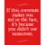
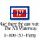

A Branding Campaign That Increased Awareness and Usage
Background
For six years, Port Imperial ferry/bus system had taken commuters and shoppers between two points in New Jersey and three destinations in Manhattan via the East River. Having started with only one ferryboat,
the system had grown to carry more than 10,000 passengers a day on its 12 ferries and 54 busses. Yet most commuters were either unaware of Port Imperial or were misinformed as to the nature of its services. To add to the confusion, Port Imperial was extending its routes across the Hudson River, the Harlem River and further north along the coastline of New Jersey --
and facing competition.
Positioning and Identity
The first order of business was to clarify Port Imperial's identity and services. We first changed the name from Port Imperial to New York Waterway in order to communicate that it was a "transportation system" (to destinations other than just New Jersey) that "owned" the waterways around New York (important for passengers and politicos to note). This was rolled into a comprehensive identity program and application systems for all busses, boats, terminal and landing signage, schedules, maps, advertising, promotional, press and collateral materials.
Advertising
By conducting research and referring to existing transportation surveys, we learned that although riders of the ferry service liked it, most commuters didn't know it existed. In addition, those that were aware perceived it to be expensive, difficult to access, and a government service subject to the foibles of public transportation.
Our advertising campaign presented the ferry as an easy, convenient and pleasant way to travel. We chose to use biting New York humor to tap into the sense of absurdity surrounding the daily onslaught of traveling into Manhattan, and tagged the campaign with the line "Get there the easy way, the NY Waterway."
The message reaches commuters when they are thinking about getting to work - on radio during morning "drive time" and on television early morning shows.
Public Relations
The public relations campaign was developed to raise awareness of New York Waterway's commuter ferries and its seasonal Hudson River Cruises. Target audiences included all local and community print and broadcast media, travel industry trade publications and tourism guides. Special events such as New York City's annual Ferry Day, festivities during the July Fourth fireworks, tie-ins with performances and conventions in Manhattan and free ticket incentives served as "news pegs" to spotlight the ferry. In addition, we spearheaded an awareness campaign (including strategic consultation on news-driven events affecting area transportation) designed to convince local traffic and transit reporters to include the ferry in regular travel updates.
Results
Within one week after the advertising/public relations campaign began, ridership increased 300%, generating extensive word-of-mouth and increased visibility.